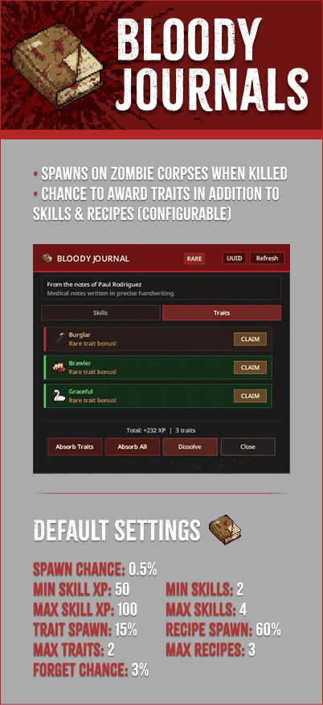

What it is
Bloody journals are the corpse-loot upgrade over worn journals. They are the family most likely to feel like a real progression hit after combat, because both the spawn lane and the reward pool are tuned to be stronger.

Bloody journals are the heavier corpse-loot branch of the system. They sit above worn journals in reward pressure and are designed to feel like standout finds rather than background filler.

Bloody journals are the corpse-loot upgrade over worn journals. They are the family most likely to feel like a real progression hit after combat, because both the spawn lane and the reward pool are tuned to be stronger.
Bloody journals benefit from loot-journal-specific tuning. That means they are the family most likely to be affected by optional skill book multiplier support and by any server rules that limit how many successful claims a loot journal can survive before dissolving.
